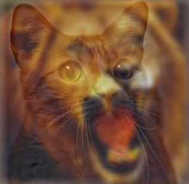
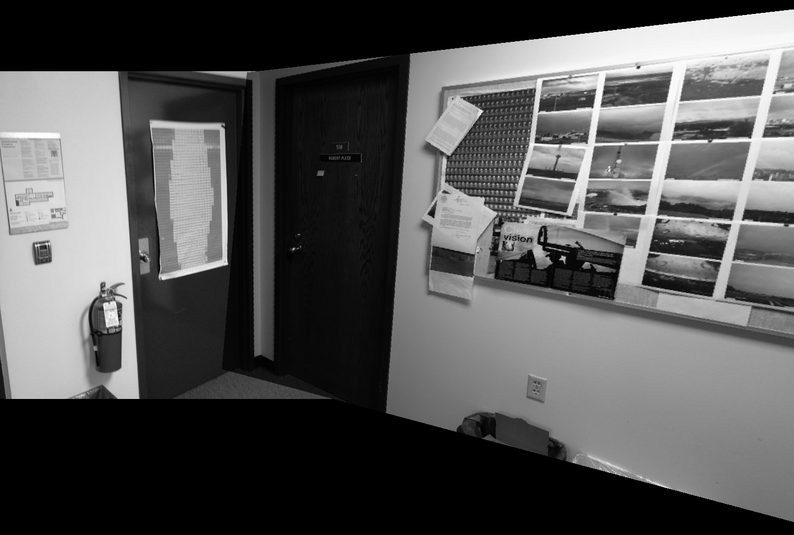
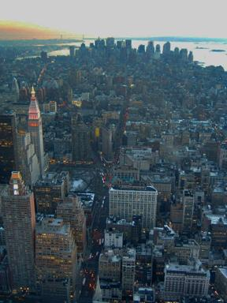
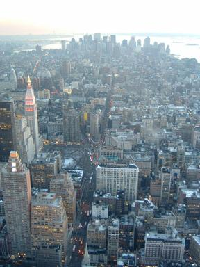

Projects > Wash U Courses > Computer Vision
Washington University in St. Louis, Spring 2012
Project 1. Hybrid Images
This project uses a modification of the approach described in the SIGGRAPH 2006 paper by Oliva, Torralba, and Schyns.
The purpose of this project was to create hybrid images, which are static images that have two interpretations, which change as a function of viewing distance. Because of the way human visual perception works, the images seem to change as the viewing distance changes. High frequency tends to dominate perception when it is available, but, at a distance, only the low frequency (smooth) part of the signal can be seen. Alternatively, one can say that what we perceive in the image changes as the image increases or decreases in size.
Project 2. Image Mosaicing
 This was a team project. Using two pictures of the same scene that have overlapping parts, we create the panorama. The workflow for the image mosaicing includes detecting SIFT features, computing the possible matches of the SIFT features, detecting the best feature matches and the best homography matrix using RANSAC and stitching the two images so that the matched points overlap. As extensions we implemented image stitching with cylindical mapping and mosaic blending.
Project 3. PCA-Based Face Recognition
This was a team project too. We used images in the AT&T face database in order to implement a face recognition program based on Principal Component Analysis (PCA). The AT&T face database contains 40 subjects, each having 10 pictures taken from various poses. We used 9 of these images as training data, and the last one for testing purposes. Testing was done versus both all the images in the training dataset, as well as versus each subject's mean image in the dataset. The success rate with 4 principal components on all images in the dataset was 80%.
Project 4. Single Image Haze Removal Using Dark Channel Prior
  In a team, implemented the Single Image Haze Removal Using Dark Channel Prior paper. In the paper, He, Sun and Tang describe a procedure for removing haze from a single input image using the dark channel prior. The most widely used model to describe the formation of a haze image is:
I(x) = J(x)t(x) + A(1 - t(x))
where I is the observed image intensity, J is the scene radiance, A is the global atmospheric light and t is the medium transmission, describing the portion of light that reaches the camera. The goal of haze removal is to recover A, J and t from I.
The paper sets out to compute the Dark Channel Prior, estimate the Atmospheric Light A based on it, use this estimated A to estimate transmission t. This transmission is then refined using Soft Matting and the Scene Radiance J is recovered using the results.

I wrote a more detailed page for this course here, where you can read more about the project requirements and results for every project.
Special thanks to Derek for working with me on the code for Projects 2, 3 and 4
You can find the code for the course on my GitHub.